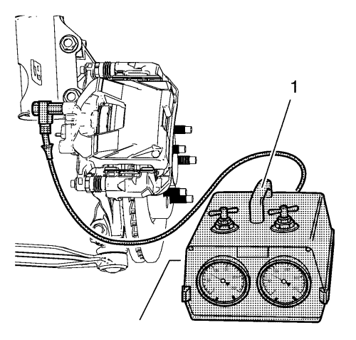

Prueba de origen de vacío del sistema de frenos
Herramientas especiales
CH-558-10 Indicador de presión
Si desea informarse sobre herramientas regionales equivalentes, consultar Herramientas especiales .
Nota:
| • | La temperatura del motor, la carga accesoria y el nivel de elevación afectarán al vacío del motor. |
| • | Las lecturas de vacío se reducirán aproximadamente 2,7 kPA (0,8 pulg. Hg) cada 305 m (1.000 pies) |

Definición: Si los frenos en vehículos de motor diesel se operan por un largo periodo de tiempo, por ejemplo al acercarse a semáforos o durante un atasco, se puede agotar el vacío. La distancia del pedal se acorta, pero volverá rápidamente a su distancia original cuando se vuelva a acumular vacío. Los conductores a menudo describen este fenómeno de esta forma: "Cuando se pisan los frenos por un largo tiempo, el pedal baja hasta el suelo" y/o "el pedal se nota blando". En vehículos diesel, esto no es motivo de preocupación, puesto que la presión en el sistema de frenos sube en este punto. Esto se puede demostrar conectando el indicador CH-558-10 (1) a la pinza de freno
Nota: Encendido desconectado.
- Reduzca la presión de aire negativa en el servofreno
Pise repetidamente el pedal de freno
- Compruebe el servofreno
| • | Pise el pedal de freno y mantenga la presión |
Definición: El sistema de frenos funciona correctamente si el pedal de freno baja más. Si el pedal de freno no baja más, el sistema de depresión se debe comprobar (tubería de depresión, válvula de retorno). Si no se encuentra ninguna avería ahí, sustituya el servofreno eléctrico. Consultar Sustitución del servofreno eléctrico : Volante a la izquierda .
| © Copyright Chevrolet. All rights reserved |